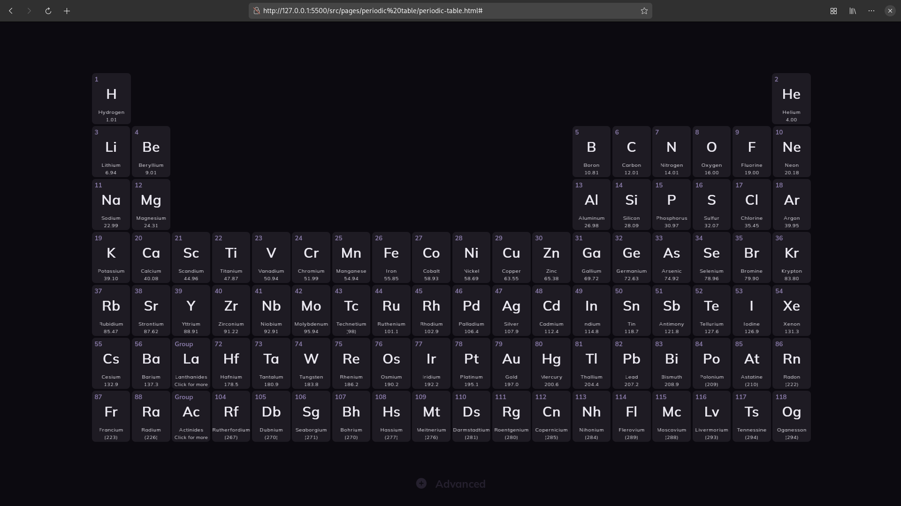

About
Development
Socials and Contact
Patch Notes
Lapschool is an opensourced website that allows you to use a variety of tools for your school. Many paper tools (ex. Periodic Table) have been digitalized. it is made for those who use laptops to take notes and don't want to take an piece of paper with them to every class. Just you, your bag and your laptop. That's it.
It's completely free since is just a website.
This is currently the only ported "tool". It has everything that a regular paper periodic table would have but I added a new feature. You can click on the element and the site will display some additional information about that element. I am not a chemist and all data is sourced from Wikipedia, so please report any mistakes you find.
Is a feature that allows you to click on an element and it will display some additional things about the element. All elements are supported. All element data is sourced from Wikipedia and shortened / modified by ChatGPT (3.0). Report all mistakes you find.
On the bottom screen is a button with additional features you can activate to make the use easier. Settings are saved in the browser storage and will still be applied on page reload.
Display all La and Ac elements. All features are applied.